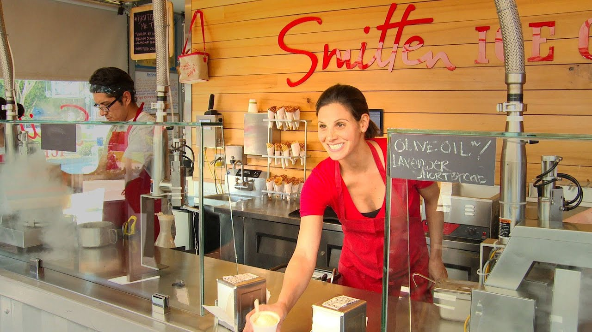

Robyn Sue Fisher is the founder of Smitten Ice Cream, which she started in 2007 after ditching her corporate career to immerse herself in all things ice cream. She invented her own patented ice cream machine to perfect the art of quickly churning pure, fresh scoops to order, using liquid nitrogen. Her ice cream has been featured in Vogue, Food & Wine, WIRED, and other publications. Fisher opened her first brick-and-mortar shop in 2011 in San Francisco’s Hayes Valley, and is rapidly expanding throughout the Bay Area and in Los Angeles.
